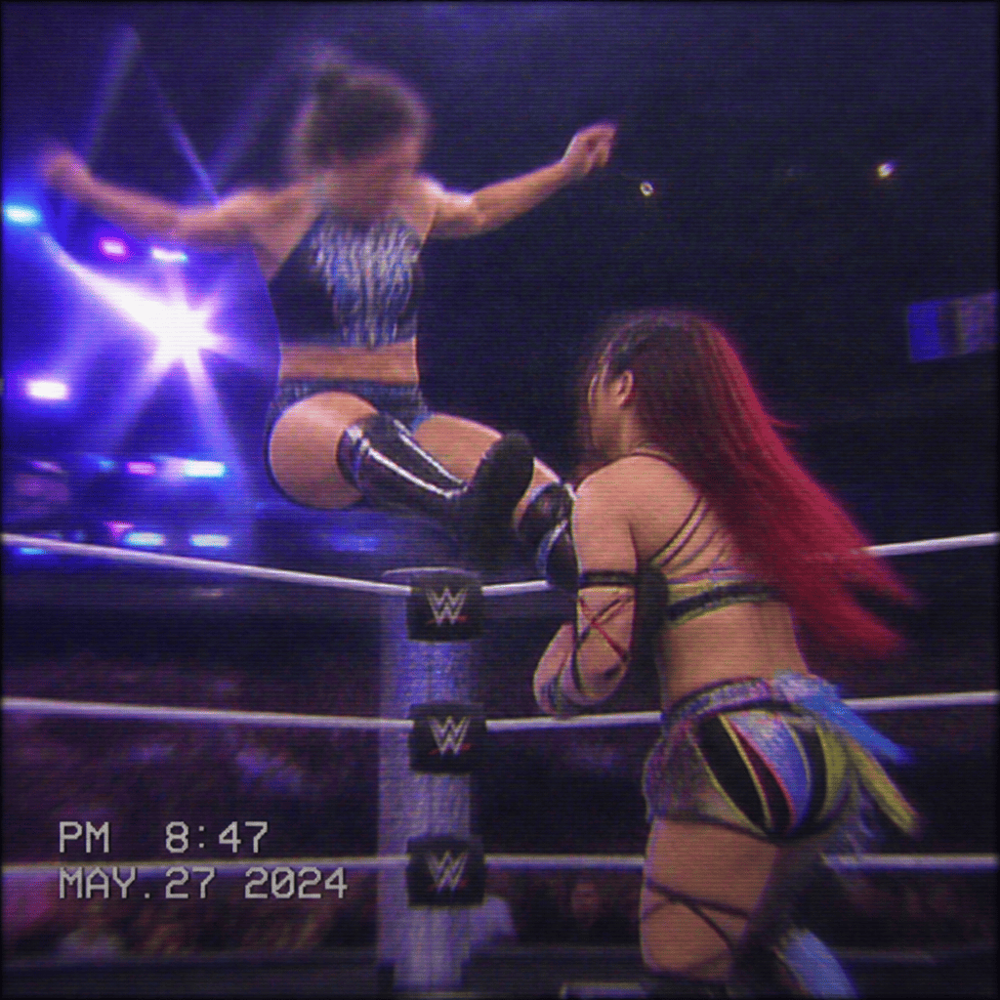

2026/10/07(水)
アベマ・試合結果速報！
○コーディ・ローデス (12分45秒 クロスロッド) キット・ウィルソン●
○ライラ・ヴァルキュリア (22分10秒 ストラングルホールド) イヨ・スカイ●
○シャーロット・フレアー (18分30秒 ビッグブーツ) ベイリー●
○AJスタイルズ (25分00秒 フェノメナルフォーアーム) ジェイ・ウーソ●
○ASUKA (15分20秒 アスカロック) リア・リプリー●
○ベイリー (19分55秒 ベイリー・トリガー) ナタリア●
○キャンディス・レラエ (23分40秒 リスキーディビジョン) ベイリー●
○ドリュー・マッキンタイア (17分35秒 クレイモア) アイバー●
○キアナ・ジェームス (14分50秒 ショルダースルー) チェルシー・グリーン●
○イリヤ・ドラグノフ (21分30秒 ドラグノフボム) ペンタ●
○ジョン・シナ (16分25秒 AA (アティチュード・アジャストメント)) ドリュー・マッキンタイア●
○DOUKI (10分15秒 定番の手首固め) ジョン・シナ●
○ザックセイバーJr (11分05秒 ストレッチマフラー) ベルト●
○ランディ・オートン (13分50秒 RKO) サミ・ゼイン●
Thank you for Watching !

「(ライラ・ヴァルキュリア vs イヨ・スカイ)」